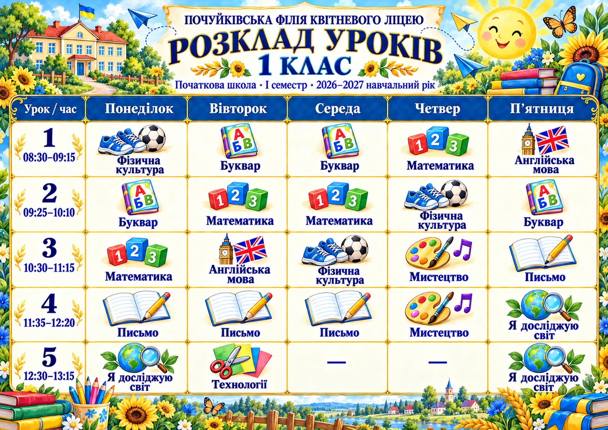

ПОЧАТКОВА ШКОЛА · І СЕМЕСТР · 2026–2027
Плакати для друку
Оберіть клас, день або дзвінки. «PDF для друку» — аркуш A4 з полями 5 мм; під час друку вибирайте «Вмістити в область друку».


ПОЧАТКОВА ШКОЛА · І СЕМЕСТР · 2026–2027
Оберіть клас, день або дзвінки. «PDF для друку» — аркуш A4 з полями 5 мм; під час друку вибирайте «Вмістити в область друку».
